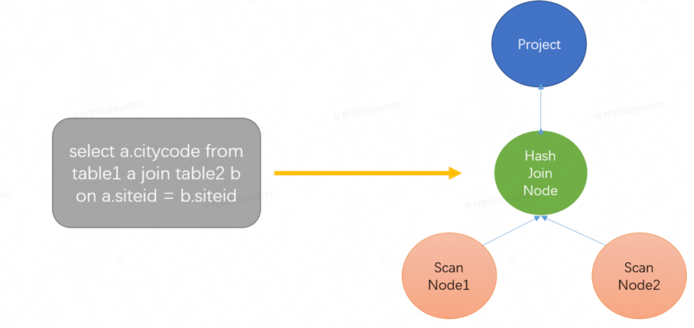

Doris 查询计划¶
一、基本概念¶
Doris 的查询和大多数数据库一样，需要经过 Parse, Analyze, Optimize, Plan, Schedule, Execute 等过程。
在 Doris 中，FE 负责查询的 Parse/解析,Analyze/分析,Optimize/优化,Plan/生成计划, Schedule/调度，BE 负责查询的 Execute/执行。
1.1、解析过程¶
了解 解析过程的必要性：
查询计划是 Plan 阶段产生的结果，我们必须要了解在 Plan 阶段之前发生了什么，也就是 Parse, Analyze, Optimize 这几个阶段发生了什么
Doris analysis: Doris SQL principle analysis - Apache Doris
1.1.1、Parse & Analyze¶
- Parse 阶段针对输入的SQL字符串，词法分析采用jflex技术，语法分析采用java cup parser技术，最后生成AST
- Analyze 阶段：
- 元信息的识别和解析：识别和解析sql中涉及的 Cluster, Database, Table, Column 等元信息，确定需要对哪个集群的哪个数据库的哪些表的哪些列进行计算
- SQL 的合法性检查：窗口函数不能 DISTINCT，投影列是否有歧义，where语句中不能含有grouping操作等
- SQL 简单重写：比如将 select * 扩展成 select 所有列，count distinct转成bitmap或者hll函数等
- 函数处理：检查sql中包含的函数和系统定义的函数是否一致，包括参数类型，参数个数等
- Table 和 Column 的别名处理
- 类型检查和转换：例如二元表达式两边的类型不一致时，需要对其中一个类型进行转换（BIGINT 和 DECIMAL 比较，BIGINT 类型需要 Cast 成 DECIMAL）
- 最后 Rewrite，进行常量简化以及子查询统一化
- 常量简化：1>2重写为false，1+1重写为2
- 子查询统一化：将 where in, where exists 重写成 semi join, where not in, where not exists 重写成 anti join
1.1.2、Plan¶
分为：单机逻辑计划、分布式逻辑计划、物理执行计划
单机逻辑计划¶
- Slot 物化：指确定一个表达式对应的列需要 Scan 和计算，比如聚合节点的聚合函数表达式和 Group By 表达式需要进行物化。
- 投影下推：BE 在 Scan 时只会 Scan 必须读取的列。
- 谓词下推：在满足语义正确的前提下将过滤条件尽可能下推到 Scan 节点。
- 分区，分桶裁剪：根据过滤条件中的信息，确定需要扫描哪些分区，哪些桶的tablet。
- Join Reorder：对于 Inner Join, Doris 会根据行数调整表的顺序，将大表放在前面。
- Sort + Limit 优化成 TopN：对于order by limit语句会转换成TopN的操作节点，方便统一处理。
- MaterializedView 选择：会根据查询需要的列，过滤，排序和 Join 的列，行数，列数等因素选择最佳的物化视图 
分布式逻辑计划¶
有了单机算子树（PlanNode）之后，就可以根据分布式环境拆分为分布式PlanFragment树（PlanFragment表示独立的执行单元）；
每拆分一个子PlanFragment，都需要建立父子PlanFragment之间的数据传输
- 因此父PlanFragment内会新增一个ExchangeNode用于接收子PlanFragment发送的数据
- 子PlanFragment创建一个DataSinkNode用于发送数据到ExchangeNode

物理执行计划¶
主要解决以下问题：
- 哪个 BE 执行哪个 PlanFragment
- 每个 Tablet 选择哪个副本去查询
- 如何进行多实例并发
1.2、概念¶
- 查询计划：查询计划是将SQL语言转换为数据库的具体执行计划。
- Fragment：FE会将具体的SQL语句的执行转化为对应的Fragment并下发到BE进行执行。BE上执行对应Fragment，并将结果汇聚返回给FE。查询规划器会将「单机查询计划」转换为「分布式查询」，分布式查询计划由多个Fragment组成。每个Fragment负责一部分的查询内容，它们之间通过ExchangeNode算子进行数据传输。
- Instance：Fragment进一步划分而来的最终的具体执行实例，划分成多个 Instance 有助于充分利用机器资源，提升一个 Fragment 的执行并发度。 instance充足时，一个instance扫描一个分桶。
- Segment：Apache Doris 存储引擎采用类似 LSM 树的结构提供快速的数据写入支持。进行数据导入时，数据会先写入 Tablet 对应的 MemTable 中，当 MemTable 写满之后，会将 MemTable 里的数据刷写（Flush）到磁盘，生成一个个不超过 256MB 的不可变的 Segment
- catalog：在spark on doris中有两种catalog
- doris_catalog，doris这种引擎的元数据，在spark on doris中catalog默认值就是doris_catalog
- spark_catalog，hivemetastore的元数据
二、参数字典¶
根据这些参数字典 profile 自动分析是否属于大查询，是什么原因导致的大查询，这部分 AI 来做，应该是回报比较高的事情，这部分现在住宿没有自动化
思路 1：多分类，把指标数据清洗一下（分箱、去量纲、标准化、归一化），预测目标是大查询类型
思路 2：大模型来进行分析，profile 本身就是结构化数据，对大模型做特征工程比较友好
节点
指标
其他
Fragment
-
hostname：执行Fragment的BE节点
-
Active：表示该节点的执行时间
-
non-child:表示执行节点自身的执行时间占总时间的百分比
-
AverageThreadTokens: 执行Fragment使用线程数目
-
FragmentCpuTime: 该fragment执行CPU耗时
-
MemoryLimit: 查询时的内存限制
-
PeakMemoryUsage: 内存消耗峰值
-
PeakReservation: 内存预留峰值
-
PeakUsedReservation: 使用预留内存峰值
-
RowsProduced: 该fragment产生的行数
hostname指的是执行Fragment的BE节点；
Active：10s270ms表示该节点的执行总时间；
non-child: 0.14%表示执行节点自身的执行时间（不包含子节点的执行时间）占总时间的百分比；
PeakMemoryUsage表示EXCHANGE_NODE内存使用的峰值；
RowsReturned表示EXCHANGE_NODE结果返回的行数；
RowsReturnedRate=RowsReturned/ActiveTime；
这三个统计信息在其他NODE中的含义相同。
BlockMgr
-
BlockWritesOutstanding:
-
BlocksCreated: BlockMgr创建的Blocks数目
-
BlocksRecycled: 重用的Blocks数目
-
BufferedPins:
-
BytesWritten: 总的落盘写数据量
-
MaxBlockSize: 单个Block的大小
-
TotalBufferWaitTime:
-
TotalEncryptionTime:
-
TotalIntegrityCheckTime:
-
TotalReadBlockTime: 读 Block 的总耗时
DataStreamSender
-
BytesSent: 发送的总数据量 = 接受者 * 发送数据量
-
IgnoreRows: 忽略的行数
-
OverallThroughput: 总的吞吐量 = BytesSent / 时间
-
PeakMemoryUsage: 内存消耗峰值
-
SerializeBatchTime: **发送数据序列化消耗的时间 **
-
UncompressedRowBatchSize: **发送数据压缩前的RowBatch的大小 **
OLAP_SCAN_NODE
注：OLAP_SCAN_NODE 节点的 Profile 通常用于分析数据扫描的效率，依据调用关系分为 OLAP_SCAN_NODE、OlapScanner、SegmentIterator 三层
-
BlockLookupCacheTime:** 在缓存中查找pagecache的时间 **
-
BlockPutCacheTime:** pagecache放入缓存的时间 **
-
BytesRead: 从数据文件中读取到的数据量。
-
GetNextTime: GetNext阶段耗时
-
MaxWaitScanTime: **OlapScanner的最大打开时间 **
-
NumDiskAccess: 涉及到的磁盘数量
-
NumScanners: **OlapScanner的数量 **
-
PeakMemoryUsage: 内存使用峰值
-
RowsRead: 从下层读到的行数
-
RowsReturned: 向上层节点返回的行数，通常小于RowsRead，一些没有下推的条件会在scan node做过滤，scan node的过滤性能比存储层要差
-
RowsReturnedRate: RowsReturned/ActiveTime
-
RowsetNum: 涉及的rowset数量
-
RowsetReaderInitTime: RowsetReader 初始化耗时
-
ScanCpuTime: 整个Scan的Cpu耗时
-
ScannerBlockPutTimer: Scaner Task放入等待队列的阻塞时间 doris_scanner_thread_pool_thread_num 和 doris_scanner_thread_pool_queue_size 两个参数可以控制线程和队列大小
-
ScannerMaxPendingTimer: Scaner Task在队列中最大等待时间
-
SegmentNum: 涉及的segment数量
-
StartScanTime: 调用start_scan方法耗时
-
TabletCount : 涉及到的tablet数量
-
TotalReadThroughput: BytesRead除以该节点运行的总时间，读取数据的吞吐量
OlapScanner:
-
BlockConvertTime: 将向量化Block转换为行结构的 RowBlock 的耗时
-
BlockFetchTime: Reader 获取 Block 的时间
-
ReaderInitTime: OlapScanner的Reader初始化耗时
-
RowsDelFiltered: 根据 Tablet 中存在的 Delete 信息过滤掉的行数，以及 unique key 模型下对被标记的删除行过滤的行数
-
RowsPushedCondFiltered: 被下推谓词过滤掉的行数
-
ScanTime: Scan耗时
-
ShowHintsTime_V1:
SegmentIterator:
-
BitmapIndexFilterTimer: 利用 bitmap 索引过滤数据的耗时
-
BlockLoadTime:
-
BlockSeekCount: 读取 Segment 时进行 block seek 的次数
-
BlockSeekTime: 读取 Segment 时进行 block seek 的耗时
-
BlocksLoad: 读取 Block 的数量
-
CachedPagesNum: **命中的page数目，可以结合TotalPagesNum计算命中率 **
-
CompressedBytesRead: 读取到的没有命中 PageCache 的 Page 的压缩前的大小
-
DecompressorTimer: 数据解压耗时
-
IOTimer: 实际从操作系统读取数据的 IO 时间
-
IndexLoadTime_V1:
-
NumSegmentFiltered: 在生成 Segment Iterator 时，通过列统计信息和查询条件，完全过滤掉的 Segment 数量
-
NumSegmentTotal: 涉及到的segment数量
-
RawRowsRead: 存储引擎中读取的原始行数（通过各种索引过滤之后读取的行数）
-
RowsBitmapIndexFiltered: 通过 Bitmap 索引过滤掉的行数
-
RowsBloomFilterFiltered: 通过 BloomFilter 索引过滤掉的行数
-
RowsConditionsFiltered: **各种索引过滤的行数 **
-
RowsKeyRangeFiltered: **通过 SortkeyIndex 索引过滤掉的行数 **
-
RowsStatsFiltered: 0
-
RowsVectorPredFiltered: 通过向量化条件过滤掉的行数
-
TotalPagesNum: 读取的总 Page 数量
-
UncompressedBytesRead: 读取的解压之后的数据大小
-
VectorPredEvalTime: 向量化过滤操作的耗时
-
OLAP_SCAN_NODE 节点负责具体的数据扫描任务。一个 OLAP_SCAN_NODE 会生成一个或多个 OlapScanner 。每个 Scanner 线程负责扫描部分（tablet）数据。
- 查询中的部分或全部谓词条件会推送给 OLAP_SCAN_NODE。这些谓词条件中一部分会继续下推给存储引擎，以便利用存储引擎的索引进行数据过滤。另一部分会保留在 OLAP_SCAN_NODE 中，用于过滤从存储引擎中返回的数据。
- OLAP_SCAN_NODE 节点的 Profile 通常用于分析数据扫描的效率，依据调用关系分为 OLAP_SCAN_NODE、OlapScanner、SegmentIterator 三层。
- OlapScanNode 在拿到 FE 的请求参数后，会首先将下推到 Scan 节点的谓词表达式转为存储层的数据结构 TCondition，然后为了提高 Scan 的并发，会将 Scan 的范围切分的更细，让每个 Scan 线程可以只 Scan 部分数据，Scan 范围切分完之后，就会通过线程池启动多个线程，让每个 OlapScanner 线程 Scan 特定部分的数据。
- 一个 OlapScanner 会绑定一个 Tablet，OlapScanner 会根据 Scan 的 Tablet 和Version，构造好 RowsetReader。RowsetReader 会逐行返回数据，每行数据是一个 RowCursor, OlapScanner 会先将 RowCursor 转为 Tuple， 因为在查询计算层，都是基于 Tuple 进行计算的，然后会用没有下推到存储层的 Filter, 对 Tuple 再进行一次过滤，最后会把 Tuple 加入 RowBatch 中，如果 RowBatch 满了，就会加入到 RowBatch 的 Queue 中，OlapScanNode 线程会不断从这个 Queue 中读取数据。
-
OlapScanNode 针对大查询做了一个优化，因为 OlapScanner 的线程池是整个 BE 进程共享的，所以可能出现一个大查询占用了所有 OlapScanner 线程，导致小查询迟迟无法 Scan。 OlapScanNode 会根据 Scan Range 的个数，Scan 的数据量确定每个 Scan 的优先级，Scan Range 个数和 Scan 数据量越小，优先级越高，不过也会定期提高大查询的优先级，避免大查询完全饿死。 HASH_JOIN_NODE
-
ExecOption: ** 构造HashTable的方式 （同步、异步）【很多节点通用】**
-
BuildBuckets: HashTable的 bucket 数量，固定值1024
-
BuildRows: ** HashTable的行数**
-
BuildTime: 构建HashTable的时间
-
LoadFactor: HashTable的负载因子
-
PeakMemoryUsage: 消耗的峰值内存
-
ProbeRows: 左孩子进行Hash Probe的行数
-
ProbeTime: 探测耗时
-
PushDownComputeTime: **构造下推谓词的耗时 **
-
PushDownTime: 谓词下推给子节点的耗时
-
RowsReturned: 向上层返回的行数
-
RowsReturnedRate: 返回吞吐量
-
Broadcast join将小表进行条件过滤后，广播到大表所在的各个节点上，形成一个内存Hash表，然后流式读取大表的数据和这个Hash表中的数据进行join EXCHANGE_NODE
-
BytesReceived: 接收的数据大小
-
ConvertRowBatchTime: 接收数据转换为rowbatch的耗时
-
DataArrivalWaitTime: 等待Sender发送数据的总时间
-
DeserializeRowBatchTimer: 反序列化网络数据的耗时
-
FirstBatchArrivalWaitTime: 等待第一个batch从Sender获取的时间
-
PeakMemoryUsage: 内存消耗峰值
-
RowsReturned: 向上层返回的函数，不包括过滤的函数
-
RowsReturnedRate: 返回吞吐量
-
SendersBlockedTotalTimer(): DataStreamRecv的队列的内存被打满，Sender端等待的耗时*
SORT_NODE
-
InMemorySortTime: 内存之中的排序耗
-
InitialRunsCreated: **初始化排序的趟数，每排序一次都要创建一个 unsorted run **
-
SortDataSize: 总的排序数据量
-
MergeGetNext: **MergeSort从需要合并的多个sorted run获取下一个batch的耗时 **
-
MergeGetNextBatch:** MergeSort提取下一个sorted run的batch的耗时 **
-
TotalMergesPerformed: merge的次数
AGGREGATION_NODE
-
Probe Method: HashTable Linear Probing 探测方法
-
BuildTime: 聚合时间
-
GetResultsTime: 从各个partition之中获取聚合结果的时间
-
HTResize: 分区HashTable大小调整的次数
-
HTResizeTime: 分区HashTable大小调整的时间消耗
-
HashBuckets: 分区HashTable的bucket数
-
HashCollisions: Hash碰撞的次数
-
HashFailedProbe: Hash探测失败的次数
-
HashFilledBuckets: HashTable填入数据的Buckets数目
-
HashProbe: Hash探测的行数
-
HashTravelLength: Hash遍历次数
-
LargestPartitionPercent: 该值越大，数据倾斜越严重 （aggregated_rows + unaggregated_rows）* 100 / num_input_rows
-
MaxPartitionLevel: **重分区的最大次数 **
-
NumRepartitions: 重分区的分区数
-
PartitionsCreated: 聚合查询拆分成Partition的个数
-
PeakMemoryUsage: 内存消耗峰值
-
RowsProcessed: 处理的行数，和探测行数一致
-
RowsRepartitioned: 重分区的行数
-
RowsReturned: ** 向上层节点返回的函数,不包含过滤的行数**
-
RowsReturnedRate: 返回吞吐量
-
SpilledPartitions: 溢出分区数
Buffer pool
-
AllocTime: 内存分配耗时
-
CumulativeAllocationBytes: 累计内存分配的量
-
CumulativeAllocations: 累计的内存分配次数
-
PeakReservation: 预留内存峰值
-
PeakUnpinnedBytes:
-
PeakUsedReservation: 使用预留内存的峰值
-
ReservationLimit: 预留内存最大限制
scan time VS. scan cpu time VS. fragment cpu time VS. scan worker wait time VS. scan wait time VS. scan worker wait time
在 Doris 查询分析中，scan time 和 scan cpu time 通常是指两个不同的概念。
- Scan time：指通过扫描表（即执行 Scan 操作）查询所花费的时间。它包括了所有执行 Scan 动作时所需的时间开销，从读取磁盘数据到对数据进行过滤和处理等全部流程, 通常包括包括网络传输延迟时间、IO操作时间以及CPU计算时间。因此，Scan Time 是全面衡量查询效率的主要指标之一。
- Scan CPU time：更侧重于测算进行 Scan 过程中所消耗的 CPU 时间。这个指标通常可以反映 Scan 操作是否计算密集型，从而帮助优化和调整各个阶段SQL语句的执行的方向。例如，与 Cache 相关的命中/未命中值就比较适合拿来计算 Scan CPU time。
- fragment cpu time：fragment cpu time与对查询结果进行计算处理相关，而scan cpu time仅与表扫描相关。是查询过程中分片处理数据所消耗的CPU时间，也就是所有分区计算执行所花费的时间总和。这个时间通常也被称为“计算时间”或“运算时间”。
- Scan Wait Time（扫描等待时间）：指的是在查询执行过程中，扫描操作等待的总时间。它包括了多个因素的等待时间，如：
- 磁盘读取等待时间：当查询需要从磁盘读取数据时，如果磁盘繁忙或者数据量较大，需要等待磁盘完成读取操作，这部分时间就算作扫描等待时间。
- 网络传输等待时间：如果查询需要从其他节点获取数据，而网络传输较慢或者网络拥塞，那么查询需要等待数据传输完成，这部分时间也算作扫描等待时间。
- 数据分片等待时间：如果查询需要等待数据分片的加载或者分片的数据准备完成，那么这部分等待时间也算作扫描等待时间。
- Scan Worker Wait Time（扫描工作进程等待时间）：指的是查询执行过程中，扫描工作进程等待的时间。在 Doris 中，查询会被划分为多个任务，并由不同的工作进程去执行。而在某些情况下，工作进程可能需要等待其他资源或者等待其他任务完成。例如：
- CPU 资源：如果工作进程需要等待 CPU 资源才能执行下一步操作，那么这部分等待时间就算作扫描工作进程等待时间。
- 内存资源：如果工作进程需要等待内存资源才能继续执行查询操作，那么这部分等待时间也算作扫描工作进程等待时间。
-
任务调度等待时间：如果工作进程需要等待调度系统分配任务，或者等待其他任务完成，那么这部分等待时间也计入扫描工作进程等待时间。 查询计划中发现 scan time 和 scan cpu time 的值基本一样？
-
大概率是因为查询计划没有遇到需要等待IO操作的瓶颈。这意味着，数据已经存储在内存或缓存中（例如，使用了 MemTable），所以查询可以快速扫描数据，而无需等待从磁盘或其他介质读取数据。
- 如果查询涉及到大量的磁盘 IO 操作，那么 scan time 与 scan cpu time 的差异可能比较明显，因为 scan wait time 会拉大二者之间的差距。
- 综上，当 scan time 和 scan cpu time 相近时，表示查询性能比较好；而当 scan time 明显高于 scan cpu time 时，则很可能存在瓶颈，需要进一步排查查询中可能存在的性能瓶颈。